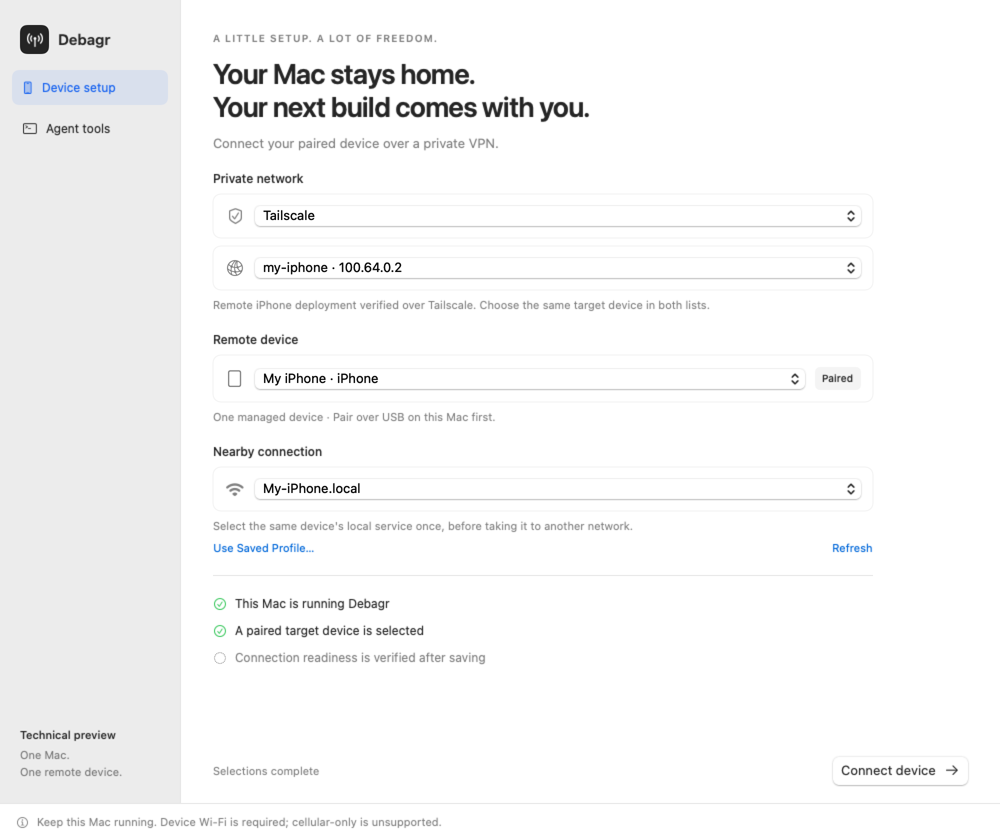
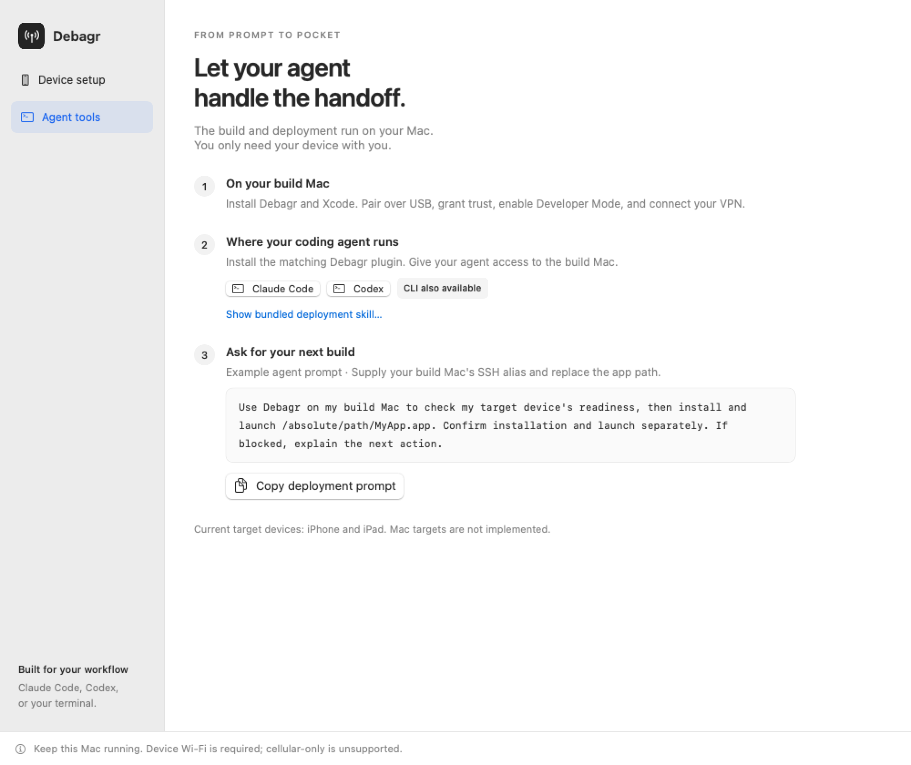

Make the introduction.
Pair over USB on your build Mac. Grant trust, enable Developer Mode, and capture the device’s local service once.
Take your iPhone to another Wi-Fi network. Ask Claude Code or Codex to install and launch your next signed build through the Mac it’s already paired with.
Native macOS app · JSON CLI · One managed remote device

Pair over USB on your build Mac. Grant trust, enable Developer Mode, and capture the device’s local service once.
Connect both devices through a private VPN. Keep the Mac running with Xcode and Debagr while your device uses another Wi-Fi network.
Your agent checks readiness, installs your signed device .app, then confirms launch. The build and deployment execute on the paired Mac.
Use Claude Code, Codex, or your terminal. Install the matching deployment plugin on the agent’s computer and give it access to the build Mac through your existing SSH setup.
Apple pairing stays on its original Mac. Your device does not become a run destination in another Mac’s Xcode.

Silent product overview using native UI captures with sample data. This is a workflow illustration, not a recording of a hardware deployment.
Your Mac stays home. Your next build comes with you. Pair once over USB. Connect your Mac and device through a private VPN. Ask Claude Code, Codex, or your terminal to check readiness, install, and confirm launch. Keep the paired Mac running. Wi-Fi is required; cellular-only is unsupported.
Install with Homebrew: brew install --cask radeknovis/debagr/debagr. Or download the Developer ID signed, notarized DMG and its SHA-256 from the 0.2.0 release. There is no active checkout or announced subscription price.
Not yet re-verified for 0.2.0: first launch on a clean Mac, a fresh remote install and launch on hardware, iPad, the recovery matrix, and Homebrew upgrades between versions.
Sponsorship helps fund compatibility work, hardware testing, documentation, and signed releases. It supports development; it does not buy a license, guaranteed support, or a feature delivery date.
Funding channels are not active yet. No payment is collected here.
Debagr is not affiliated with or endorsed by Apple, Tailscale, OpenAI, or Anthropic.